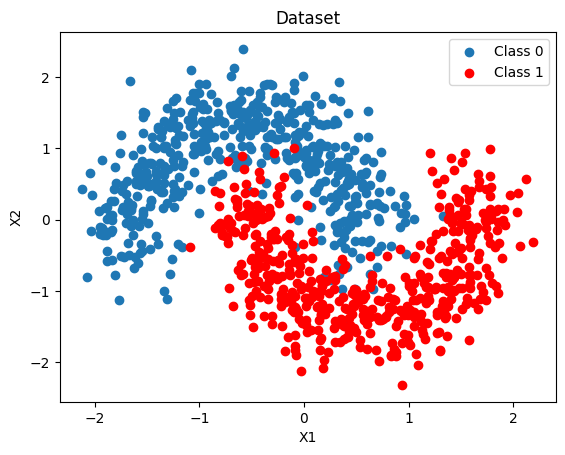
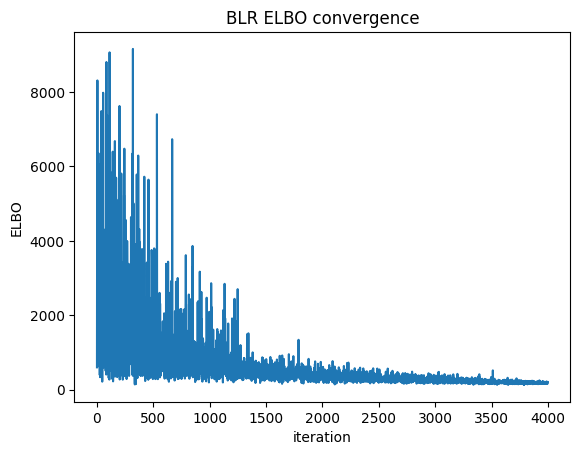
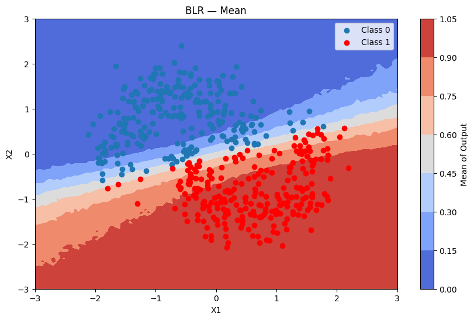
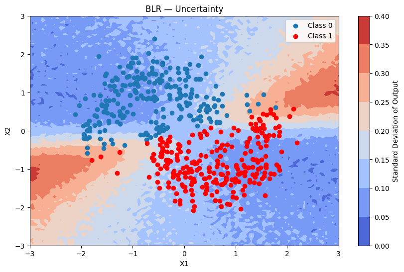
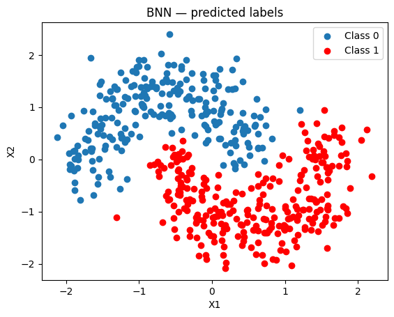
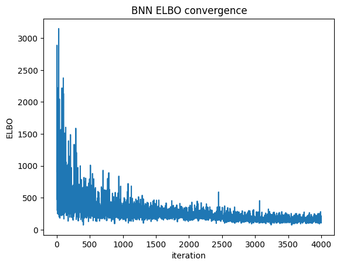
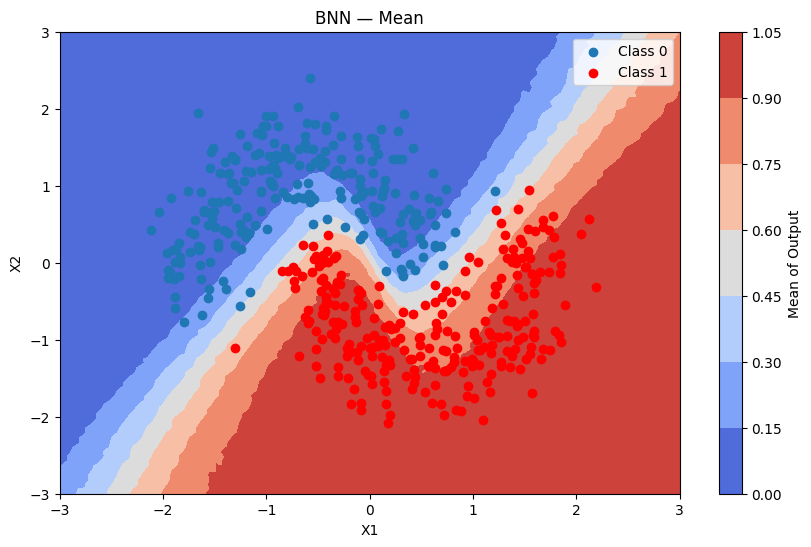
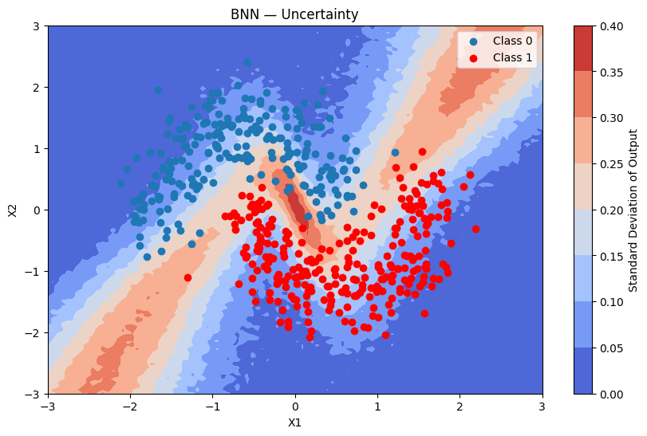
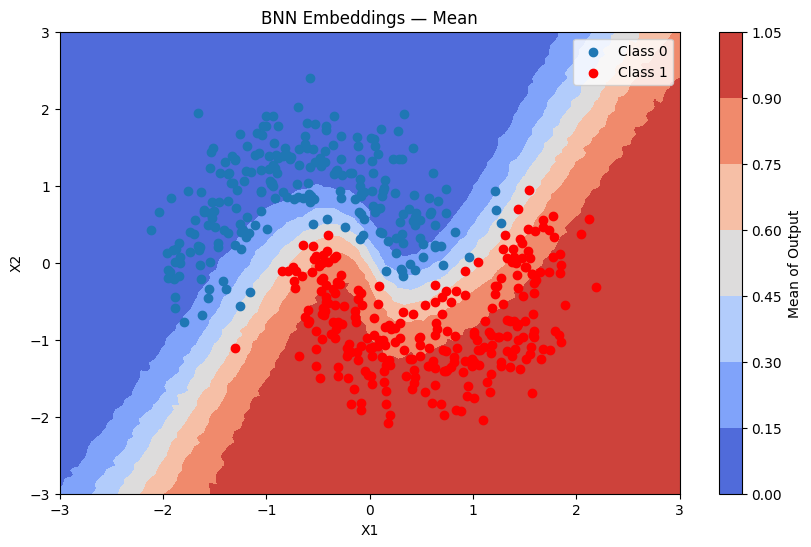
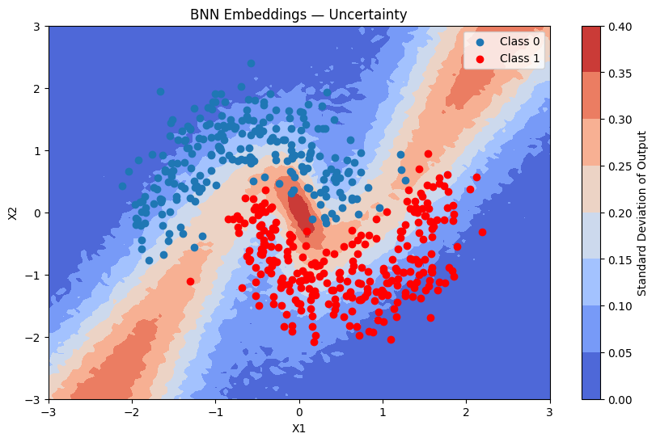

Bayesian Neural Network
Introduction
This notebook demonstrates Bayesian models for binary classification, progressing from Bayesian Logistic Regression to Bayesian Neural Networks, and then to BNNs with rich feature types: categorical embeddings or numerical normalization.
The notebook is based on the example in https://num.pyro.ai/en/latest/tutorials/bayesian_regression.html
[1]:
import matplotlib.pyplot as plt
import numpy as np
from sklearn.datasets import make_moons
from sklearn.metrics import accuracy_score, roc_auc_score
from sklearn.model_selection import train_test_split
from sklearn.preprocessing import scale
from pybandits.model import (
BayesianNeuralNetwork,
CategoricalFeatureConfig,
FeaturesConfig,
)
rng = np.random.default_rng(seed=0)
%load_ext autoreload
%autoreload 2
/home/runner/.cache/pypoetry/virtualenvs/pybandits-vYJB-miV-py3.10/lib/python3.10/site-packages/tqdm/auto.py:21: TqdmWarning: IProgress not found. Please update jupyter and ipywidgets. See https://ipywidgets.readthedocs.io/en/stable/user_install.html
from .autonotebook import tqdm as notebook_tqdm
[2]:
def plot_map(value, grid, x_test, pred, metric, title=""):
cmap = plt.get_cmap("coolwarm")
fig, ax = plt.subplots(figsize=(10, 6))
contour = ax.contourf(*grid, value.reshape(100, 100), cmap=cmap)
ax.scatter(x_test[pred == 0, 0], x_test[pred == 0, 1], label="Class 0")
ax.scatter(x_test[pred == 1, 0], x_test[pred == 1, 1], color="r", label="Class 1")
cbar = plt.colorbar(contour, ax=ax)
cbar.ax.set_ylabel(f"{metric} of Output")
ax.set(xlim=(-3, 3), ylim=(-3, 3), xlabel="X1", ylabel="X2", title=title or metric)
ax.legend()
plt.show()
Generate Data
We generate a 2-D binary dataset that is not linearly separable (two interleaved moons), then split it into training and test sets. A dense 2-D grid is also created here for the uncertainty maps used throughout the notebook.
[3]:
X, Y = make_moons(noise=0.2, random_state=0, n_samples=1000)
X = scale(X)
x_train, x_test, y_train, y_test = train_test_split(X, Y, test_size=0.5)
y_train = y_train.tolist()
y_test = y_test.tolist()
fig, ax = plt.subplots()
ax.scatter(X[Y == 0, 0], X[Y == 0, 1], label="Class 0")
ax.scatter(X[Y == 1, 0], X[Y == 1, 1], color="r", label="Class 1")
ax.set(xlabel="X1", ylabel="X2", title="Dataset")
ax.legend()
# 2-D grid for uncertainty maps — reused by every model below
grid = np.mgrid[-3:3:100j, -3:3:100j].astype(float)
grid_2d = grid.reshape(2, -1).T

Bayesian Logistic Regression
Using BayesianNeuralNetwork.cold_start we create a probabilistic linear classifier with Student-T weight priors (default: mu=0, sigma=10, nu=5).
We fit it with Variational Inference using Adam and minibatches of 256.
[4]:
blr = BayesianNeuralNetwork.cold_start(
n_features=2,
update_method="VI",
update_kwargs={"num_steps": 4000, "batch_size": 256, "optimizer_type": "adam"},
)
blr.update(context=x_train, rewards=y_train)
[5]:
batch_predictions = [blr.sample_proba(x_test, rng=rng) for _ in range(500)]
batch_proba_blr = np.array([[p[0] for p in preds] for preds in batch_predictions])
pred_proba_blr = batch_proba_blr.mean(axis=0)
pred_blr = pred_proba_blr > 0.5
accuracy_blr = accuracy_score(y_test, pred_blr)
auc_blr = roc_auc_score(y_test, pred_proba_blr)
print(f"BLR — Accuracy: {accuracy_blr:.3f}, AUC: {auc_blr:.3f}")
BLR — Accuracy: 0.882, AUC: 0.952
Because BLR is linear it struggles with the non-linear moon boundary.
[6]:
fig, ax = plt.subplots()
ax.scatter(x_test[pred_blr == 0, 0], x_test[pred_blr == 0, 1], label="Class 0")
ax.scatter(x_test[pred_blr == 1, 0], x_test[pred_blr == 1, 1], color="r", label="Class 1")
ax.set(title="BLR — predicted labels", xlabel="X1", ylabel="X2")
ax.legend()
[6]:
<matplotlib.legend.Legend at 0x7fcc39d3aa40>
We can check convergence by plotting the Evidence Lower Bound (ELBO) over iterations. ELBO is a metric used in Variational Inference to measure the convergence of the approximation to the true posterior — a higher ELBO indicates a better approximation. https://en.wikipedia.org/wiki/Evidence_lower_bound
[7]:
plt.plot(blr.approx_history)
plt.ylabel("ELBO")
plt.xlabel("iteration")
plt.title("BLR ELBO convergence")
plt.show()

Predictions + uncertainty map
[8]:
batch_predictions = [blr.sample_proba(grid_2d, rng=rng) for _ in range(500)]
batch_proba_blr_grid = np.array([[p[0] for p in preds] for preds in batch_predictions])
plot_map(batch_proba_blr_grid.mean(axis=0), grid, x_test, pred_blr, "Mean", "BLR — Mean")

[9]:
plot_map(batch_proba_blr_grid.std(axis=0), grid, x_test, pred_blr, "Standard Deviation", "BLR — Uncertainty")

Bayesian Neural Network
A BNN captures non-linear decision boundaries through multiple hidden layers. Each weight is a random variable with a Student-T prior, jointly updated with VI.
Model settings:
hidden_dim_list=[16, 16]— two hidden layers with 16 neurons eachactivation="tanh"— symmetric, works well with zero-centred priorsuse_residual_connections=True— skip connections improve gradient flow in deeper networksdist_type="studentt",dist_params_init={"mu": 0, "sigma": 1, "nu": 5}
Using Bayesian Neural Network
In the following section we will demonstrate how a bayesian neural network (BNN) can capture complex patterns and relationships in data through multiple layers of abstraction, leading to better performance on tasks with high-dimensional features. In contrast, bayesian logistic regression is limited to linear relationships and may not effectively model intricate dependencies within the data.
In order to define the model structure, we set:
Model structure: The
hidden_dim_list=[16, 16], which means that the model structure will have a 2-layer network with 16 neurons in each hidden layer.Activation function: We use
activation="tanh"for tanh activation (other options: “relu”, “sigmoid”, “gelu”)Residual connections: We enable
use_residual_connections=Trueto help with gradient flow in deeper networks
The fit is performed using the Variational Inference algorithm with 10K iterations, and with minibatches of size 64.
The neurons’ Student-t distribution are initialized with mu = 0, sigma = 1 and nu = 5 (Student-t is the default distribution type).
[10]:
dist_params = {"mu": 0, "sigma": 1, "nu": 5} # dist_type defaults to "studentt"
bnn = BayesianNeuralNetwork.cold_start(
n_features=2,
hidden_dim_list=[16, 16],
activation="tanh",
use_residual_connections=True,
update_method="VI",
dist_type="studentt",
dist_params_init=dist_params,
update_kwargs={"num_steps": 4000, "batch_size": 64, "optimizer_type": "adam"},
)
Applying the update method will calculate the approximated posterior of the parameters, and update the model.
[11]:
bnn.update(context=x_train, rewards=y_train)
[12]:
batch_predictions = [bnn.sample_proba(x_test, rng=rng) for _ in range(500)]
batch_proba_bnn = np.array([[p[0] for p in preds] for preds in batch_predictions])
pred_proba_bnn = batch_proba_bnn.mean(axis=0)
pred_bnn = pred_proba_bnn > 0.5
accuracy_bnn = accuracy_score(y_test, pred_bnn)
auc_bnn = roc_auc_score(y_test, pred_proba_bnn)
print(f"BNN — Accuracy: {accuracy_bnn:.3f}, AUC: {auc_bnn:.3f}")
print(f"BLR — Accuracy: {accuracy_blr:.3f}, AUC: {auc_blr:.3f}")
BNN — Accuracy: 0.948, AUC: 0.988
BLR — Accuracy: 0.882, AUC: 0.952
The BNN produces a much better separation than the linear BLR.
[13]:
fig, ax = plt.subplots()
ax.scatter(x_test[pred_bnn == 0, 0], x_test[pred_bnn == 0, 1], label="Class 0")
ax.scatter(x_test[pred_bnn == 1, 0], x_test[pred_bnn == 1, 1], color="r", label="Class 1")
ax.set(title="BNN — predicted labels", xlabel="X1", ylabel="X2")
ax.legend()
[13]:
<matplotlib.legend.Legend at 0x7fcc39d38bb0>

ELBO convergence
[14]:
plt.plot(bnn.approx_history)
plt.ylabel("ELBO")
plt.xlabel("iteration")
plt.title("BNN ELBO convergence")
plt.show()

Predictions + uncertainty map
[15]:
batch_predictions = [bnn.sample_proba(grid_2d, rng=rng) for _ in range(500)]
batch_proba_bnn_grid = np.array([[p[0] for p in preds] for preds in batch_predictions])
plot_map(batch_proba_bnn_grid.mean(axis=0), grid, x_test, pred_bnn, "Mean", "BNN — Mean")

[16]:
plot_map(batch_proba_bnn_grid.std(axis=0), grid, x_test, pred_bnn, "Standard Deviation", "BNN — Uncertainty")

Using Normal Priors Instead of Student-t
You can replace the Student-T prior with a Normal prior by setting dist_type="normal" and omitting nu from dist_params_init.
Prior |
Tail weight |
Robustness to outliers |
Speed |
|---|---|---|---|
Student-T (default) |
Heavy |
High |
Slightly slower |
Normal |
Light |
Lower |
Faster |
When to use Normal: faster computation, no expectation of heavy-tailed noise. When to use Student-T: robustness to outliers, stronger regularisation.
[17]:
bnn_normal = BayesianNeuralNetwork.cold_start(
n_features=2,
hidden_dim_list=[16, 16],
activation="relu",
use_residual_connections=True,
update_method="VI",
dist_type="normal",
dist_params_init={"mu": 0, "sigma": 1},
update_kwargs={"num_steps": 4000, "batch_size": 256, "optimizer_type": "adam"},
)
bnn_normal.update(context=x_train, rewards=y_train)
batch_predictions_normal = [bnn_normal.sample_proba(x_test, rng=rng) for _ in range(500)]
batch_proba_normal = np.array([[p[0] for p in preds] for preds in batch_predictions_normal])
pred_proba_normal = batch_proba_normal.mean(axis=0)
pred_normal = pred_proba_normal > 0.5
accuracy_normal = accuracy_score(y_test, pred_normal)
auc_normal = roc_auc_score(y_test, pred_proba_normal)
print(f"BNN Student-T — Accuracy: {accuracy_bnn:.3f}, AUC: {auc_bnn:.3f}")
print(f"BNN Normal — Accuracy: {accuracy_normal:.3f}, AUC: {auc_normal:.3f}")
BNN Student-T — Accuracy: 0.948, AUC: 0.988
BNN Normal — Accuracy: 0.942, AUC: 0.983
FeaturesConfig: Categorical Embeddings
Real-world datasets often mix numerical and categorical columns. FeaturesConfig lets you describe the layout of a numpy array with mixed column types.
Columns can appear in any order. Each categorical feature is identified by its column_index in the input array; every remaining column is treated as numerical.
For each categorical feature the BNN learns a Bayesian embedding matrix (shape cardinality × embedding_dim) jointly with its layer weights via VI — the same idea as word embeddings, but fully probabilistic.
Input array (n_samples, n_features)
│
├─► numerical columns (any positions not claimed by a CategoricalFeatureConfig)
│
└─► column_index k ──► EmbeddingMatrix (cardinality, emb_dim)
│
└──► lookup row per sample ──► (n_samples, emb_dim)
│
np.concatenate([numerical, emb_0, emb_1, ...]) ◄─┘
│
(n_samples, n_numerical + Σ emb_dim)
│
BNN layers (unchanged)
Preparing the Dataset
[18]:
def encode_region(x1_values: np.ndarray) -> np.ndarray:
"""Encode x1 into region index: 0=left, 1=center, 2=right."""
return np.where(x1_values < -0.5, 0, np.where(x1_values < 0.5, 1, 2)).astype(np.int32)
region_labels = ["left", "center", "right"] # index → label
# Context arrays: [x1, x2, region_index]
ctx_train = np.column_stack([x_train, encode_region(x_train[:, 0])])
ctx_test = np.column_stack([x_test, encode_region(x_test[:, 0])])
print("First 5 training samples (x1, x2, region_index):")
print(ctx_train[:5])
print("\nRegion distribution:")
unique, counts = np.unique(ctx_train[:, 2], return_counts=True)
for idx, count in zip(unique.astype(int), counts):
print(f" {region_labels[idx]}: {count}")
First 5 training samples (x1, x2, region_index):
[[ 0.28230367 -0.35472646 1. ]
[ 0.72910341 0.19558446 2. ]
[ 0.55155557 -0.29368725 2. ]
[ 0.06854981 0.18484577 1. ]
[ 1.8624287 -0.32259996 2. ]]
Region distribution:
left: 155
center: 200
right: 145
Configuring FeaturesConfig
[19]:
feature_config = FeaturesConfig(
n_features=3, # total columns: x1 (col 0), x2 (col 1), region_index (col 2)
categorical_features_configs=[
CategoricalFeatureConfig(
column_index=2, # column 2 = region_index
cardinality=3, # 0=left, 1=center, 2=right
embedding_dim=4,
),
],
)
print(f"Numerical columns : {feature_config.n_numerical}") # 2
print(f"Categorical features: {len(feature_config.categorical_features_configs)}") # 1
print(f"Total input columns : {feature_config.n_features}") # 3
print(f"Total BNN input dim : {feature_config.total_output_dim}") # 2 + 4 = 6
Numerical columns : 2
Categorical features: 1
Total input columns : 3
Total BNN input dim : 6
Training
[20]:
bnn_emb = BayesianNeuralNetwork.cold_start(
n_features=3,
categorical_features={2: 3},
hidden_dim_list=[16, 16],
activation="tanh",
use_residual_connections=True,
update_method="VI",
dist_type="studentt",
dist_params_init={"mu": 0, "sigma": 1, "nu": 5},
update_kwargs={"num_steps": 4000, "optimizer_type": "adam"},
)
bnn_emb.update(context=ctx_train, rewards=y_train)
[21]:
batch_predictions_emb = [bnn_emb.sample_proba(ctx_test, rng=rng) for _ in range(500)]
batch_proba_emb = np.array([[p[0] for p in preds] for preds in batch_predictions_emb])
pred_proba_emb = batch_proba_emb.mean(axis=0)
pred_emb = pred_proba_emb > 0.5
accuracy_emb = accuracy_score(y_test, pred_emb)
auc_emb = roc_auc_score(y_test, pred_proba_emb)
print(f"BNN with embeddings — Accuracy: {accuracy_emb:.3f}, AUC: {auc_emb:.3f}")
BNN with embeddings — Accuracy: 0.946, AUC: 0.989
Predictions + uncertainty map
For the uncertainty map we build a grid context array by encoding the region column using the same helper.
[22]:
ctx_grid = np.column_stack([grid_2d, encode_region(grid_2d[:, 0])])
batch_predictions_emb_grid = [bnn_emb.sample_proba(ctx_grid, rng=rng) for _ in range(500)]
batch_proba_emb_grid = np.array([[p[0] for p in preds] for preds in batch_predictions_emb_grid])
plot_map(batch_proba_emb_grid.mean(axis=0), grid, x_test, pred_emb, "Mean", "BNN Embeddings — Mean")

[23]:
plot_map(batch_proba_emb_grid.std(axis=0), grid, x_test, pred_emb, "Standard Deviation", "BNN Embeddings — Uncertainty")

Inspecting the Learned Embeddings
[24]:
# Embedding for the first (and only) categorical feature — region (index 0 in the list)
emb_dist = bnn_emb.model_params.embedding_params.embeddings[0]
print("Learned embedding means (mu) for each 'region' category:")
for label, mu_row in zip(region_labels, emb_dist.mu):
print(f" {label:8s}: {[round(v, 3) for v in mu_row]}")
print("\nLearned embedding std-devs (sigma) for each 'region' category:")
for label, sigma_row in zip(region_labels, emb_dist.sigma):
print(f" {label:8s}: {[round(v, 3) for v in sigma_row]}")
Learned embedding means (mu) for each 'region' category:
left : [-0.177]
center : [-0.012]
right : [0.099]
Learned embedding std-devs (sigma) for each 'region' category:
left : [0.428]
center : [0.264]
right : [0.439]